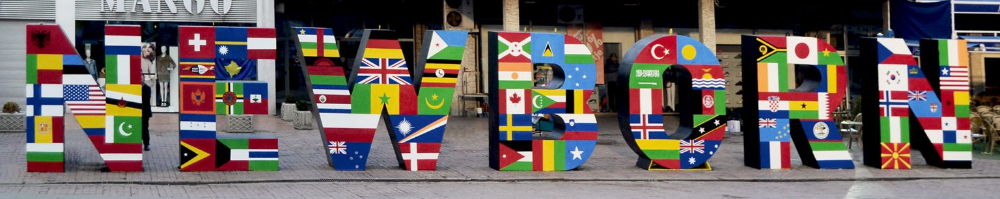
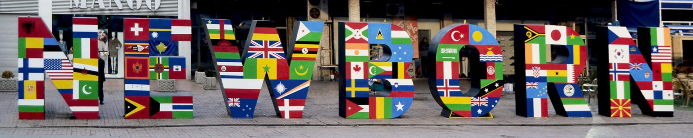

The ancient Illyrians are known as the Albanian predecessors and the initial inhabitants on the Balkan
Peninsula which were followed by the Slavs in the 6th and 7th centuries. The country of Kosovo was ruled by
Bulgaria from the 9th century up until the Serbs took control in the 12th century. In 1389, the Ottoman
Empire Turks defeated the Serbs and absorbed Kosovo. Following the Ottoman Turks defeat, the Ottoman Empire
ruled centuries until year 1913 which was when Serbia regained control over Kosovo as it became part of the
Yugoslavia Federation. On February 17, 2008, Kosovo gained its independence from Serbia after another bloody
war around the end of the 20th century.
Recent History
2003 - The first direct talks took place among Kosovar and Serbian leaders in October 2003, since the
conflict of 1999.
2003 - Yugoslavia turned into Serbia-Montenegro in December 2003. The UN set out the conditions for the
final status talks for Kosovo in 2005 which were given the name of “standards before status” by the
condition of Kosovo making “sufficient progress” by meeting some international standards in relation to its
laws, freedom of movement, democratic institutions and human rights.
2004 - The worst conflict took place between the Kosovars and Serbs in March 14-19 years after the clash of
1999. Aggression initiated by a drive-by shooting resulting in a Serb teenager’s death followed by three
Albanian teenagers’ drowning in the Ibar River. It was argued and believed that these occurrences were used
to arrange violence by the Serb extremist groups.
2005 - Talks for the final status of Kosovo were sponsored by the UN and chaired by the former President of
Finland, Martti Ahtisaari.
2008 - Kosovo’s independence was declared by Kosovo’s Parliament on February 17, 2008; Kosovo – the Republic
of Kosovo with partial recognition of the declaration. Kosovo is currently the second youngest country in
the world and the youngest country in Europe.
2008 - Parliament adopts new constitution.
2010 - The International Court of Justice rules that Kosovo’s declaration of independence from Serbia in
2008 was not illegal under international law, in response to a complaint from Serbia that it had violated
its territorial integrity.
The Living Monument
NEWBORN is the Monument of the Declaration of Independence of Kosova. It was unveiled on 17 February 2008,
and has been repainted differently every year, continuously giving it a new meaning. Each year’s theme
contains a message from Kosova to the world, portraying its participation and contribution in global events.
Ever since, NEWBORN has become the signature landmark of Prishtina, the capital city of Kosova, making it
the most visited and photographed monument in the region. Newborn was designed and created in a
collaboration between Kosovar designer Fisnik Ismaili and creative agency Ogilvy Kosova.
 
